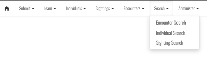

Searching#
Wildbook supports searching and display of your data in multiple formats. The search types in Wildbook are:
Encounter Search, which allows you to search through Encounter data in Wildbook
Individual Search, which allows you to search through Marked Individual data in Wildbook
Sighting Search, which allows you to search through the Sighting data (formerly “Occurrence”) in Wildbook
The data returned will match the data type. For example, the same date and location search filters may yield 2001 encounters, 882 sightings, and 356 marked individuals. You can access each search off the Wildbook menu by selecting Search and then the appropriate type of search.

Fields#
The following fields allow you to filter your data search. Not every field is available in every search type.
Location filter (map): allows you to define a GPS coordinate boundary box on a map or in form fields and initiate a search based on encounters in that location.
Location filters (text): allow you to execute a search against study sites and verbatim location descriptions in your library.
Date filters: allow you to search by an Encounter date range, a date-of-submission range, and/or by pre-defined verbatim date(s) (e.g., “Summer sampling 2004”).
Observation attribute filters: allow you to search by species, sex, status, length, behavior descriptions or pre-defined keywords.
Image label filters: allow you to search across encounter by marked individual attributes, such as alternate ID or number of sightings.
Collected data fields: allow you to search across Sighting metadata fields, including group behavior, group composition, and more.
Identity filters: allow you to search across marked individual attributes, such as number of years between sightings.
Tags filters: allow you to search on Metal, Acoustic, and Satellite Tag metadata.
Biological samples and analyses filters: allow you to search on biological samples and their attached measurements and analyses (e.g., haplotype, microsatellite markers, genetic sex, etc.)
Social filters: allow you to filter Marked Individuals by their social roles and social units.
Metadata filters: allow you to search across related Encounter state, submitter username, project name, and more.
Results Display#
Search results can be displayed and exported in a variety of formats. The URL for a search result can be bookmarked or otherwise copied and saved outside Wildbook to return to the result later. Search results are dynamic and reflect the latest state of Wildbook, changing as new data matches search criteria. Each search display format is represented by a tab. Not every tab is available in every search type.
Results table#
The Results table provides a filterable, table based listing of search results. You can do the following on the page:
Use the filter by text field to enter text to filter the table by. Click filter to apply the filter. Click clear to remove the filter.
Click any column heading once or twice to sort the table by that column in ascending order or descending order.
Click any table row to go to that data field (Encounter, Marked Individual, or Sighting). Some individual fields may also be clickable.
Project management#
The Project management tab allows you to add search results to a project.
Matching Images/Videos#
The Matching Images/Videos tab displays the Annotations (and related MediaAssets) that correspond to any Encounters related to the search results. Click any Annotation to expand a view of the MediaAsset and to get links to the related Encounter and its metadata.
Mapped Results#
The Mapped Results tab displays the positions of Encounters related to this search result if they have GPS coordinates. For Marked Individuals, mapped search results may be connected by chevrons to link points of travel over time. You can further alter the display by selecting the following Map aspects:
Position only - displays all GPS coordinates in uniform gray
Sex - displays GPS coordinates in blue if the related Encounter was recorded as male, pink if the GPS coordinates for the Encounter were recorded as female, and grey if unknown.
Haplotype - displays GPS coordinates with randomized colors corresponding to haplotypes recorded with Tissue Samples on matching, related Encounters. This view allows for the display of genetic flow.
Species - displays GPS coordinates with randomized colors corresponding to species recorded on related Encounters.
Results Calendar#
The Results Calendar tab displays related Encounters by their dates on a calendar.
Analysis#
The Analysis tab summarizes and visualizes metadata from the search results. Displayed results differ by search type.
Export#
The Export tab displays available formats to export data matching the search results. Available formats vary by search type.